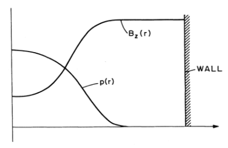
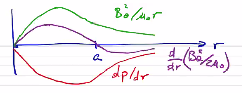
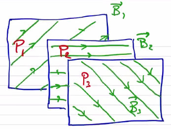
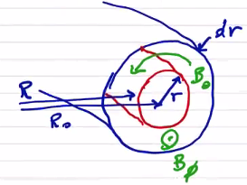
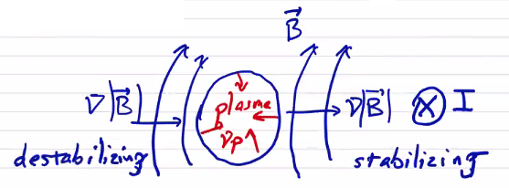

In a θ pinch, we have an applied axial field generated by a driven azimuthal current distribution. The way these usually work is that you begin with a plasma generated by some pre-ionization process and zero field. Then you crank up the current to drive an azimuthal current in the plasma (in the opposite direction as the external current).
j×B=∇p→jθBz=drdp
jθ=−μ01drdBz
drdp=−μ01BzdrdBz=−drd(2μ0Bz2)
p+2μ0Bz2=constant=2μ0B02

At equilibrium, the magnetic pressure balances the plasma pressure. If we say that the pressure is
p=p0e−r2/a2
with p0 the pressure on-axis, then we can solve for the axial field
Bz=B0(1−B0e−r2/a2)1/2
We can define the peak β to be the ratio of the on-axis pressure to the maximum magnetic field
β0=B02/2μ0p0
By definition, the peak β will always be ≤1. We can define ⟨β⟩
⟨β⟩=Ba2/2μ0⟨p⟩
where Ba is a characteristic field value, typically taken to be at the plasma edge.
⟨β⟩=B02πa22μ0∫0a2πrpdr
=a22∫0aB02/2μ0rpdr=a22∫0a(1−B02Bz2)rdr
In this form, we can see that because Bz will everywhere be less than B0, we can increase ⟨β⟩ by driving Bz as low as possible. In this particular example, ⟨β⟩/β0=63%.
Z-pinch
In the case of a Z-pinch, we only have an applied axial current.
j=jz(r)z^
For force balance
j×B=∇p→−jzBθ=drdp
jz=μ01r1drd(rBθ)
−drdp=μ0rBθdrd(rBθ)
If we find it convenient we can separate this into a magnetic pressure term
−drd(p+2μ0Bθ2)=μ0rBθ2
Bennett Profile
An example of an achievable distribution is the Bennett profile, which has a diffuse form
Bθ=2πμ0Ir2+a2r
jz=πI(r2+a2)2a2
p=8π2μ0I2(r2+a2)2a2
Interestingly, j∝p. For a uniform temperature, j∝n. Since current density is the product of v and n, this says that we have a uniform drift velocity and all particles are drifting with the same velocity at all points along the profile. If we consider what the equilibrium profile looks like for a Bennett profile:

So for r<a we have magnetic tension and pressure which balance the plasma pressure. For r≥a we have magnetic tension which balances both plasma pressure and magnetic pressure.
The Z-pinch ⟨β⟩
⟨β⟩≡Ba2/2μ0⟨p⟩=Ba2πa22μ0∫0a2πrpdr
If we multiply the force balance by r2 and integrate
If we have a discrete pinch such that p(a)=0 then the first term vanishes.
∫0a2rpdr=2μ0(aBa)2
If we substitute our definition of ⟨β⟩, we find ⟨β⟩=1. For a diffuse pinch in which p(a)=0 we end up with ⟨β⟩≤1 and we have a wall-supported plasma. Ideal confinement (⟨β⟩=1) is a very nice property and is what makes the Z-pinch configuration so interesting.
Stability Considerations
Instability results if there exists a plasma displacement that leads to a lower energy state. There are several ways to provide stability in the context of MHD. The two most common are magnetic shear and magnetic well.
Magnetic Shear
In ideal MHD, magnetic field lines can not break or tear. Let's consider some flux surface containing field lines B3. Behind it, we have another flux surface containing field lines B2 which are not parallel to B3, and the same for B1.

Because the field lines are a different angles to each other, these flux surfaces can not interpenetrate. In other words, if the flux surface pressures are P1>P2>P3, we can maintain the pressure gradient and prevent the flux surfaces from moving each other. What prevents the surfaces from achieving a lower energy state is the magnetic shear between flux surfaces.
Without shear, the surfaces can interpenetrate and exchange positions. In the case of a toroidal geometry, magnetic shear is defined by the rotational transform ι, or by the safety factor
q=ι2π
Generally speaking, q is generally referenced for tokamaks and ι is referenced for stellarators. Another way of picturing the safety factor in a toroidal geometry is
q≡no. of windings short wayno. of windings long way=dVdϕpdVdψt=dϕpdϕt=mn=poloidal transitstoroidal transits
In a cylindrical (1D) geometry it is just
q=azimuthal transitslongitudinal transits
Let's calculate the safety factor for a toroidal geometry:

dVdϕp=2πR02πrdrBθ2πRdr=2πrBθR0R
dVdϕt=2πR02πrdrBϕ2πrdr=2πR0Bϕ
q=RBθrBϕ
In a cylindrical geometry the analysis is even simpler
q=2πLBθrBz
As a note, it would appear that q→0 at the magnetic axis as r→0, but in general Bθ→0 as well, and the safety factor is generally bounded at r→0
q is a flux surface quantity.
We care about magnetic shear. How does that relate to the safety factor? Magnetic shear is defined as
s≡2dV/Vdq/q=2dln(V)dln(q)
Even a uniform Bz or Bθ produces a finite magnetic shear because of the way that r and Bθ change. The safety factor is often considered synonymous with magnetic shear, and often we don't even compute s.
Shear is generally a stabilizing effect. Interchange between flux surfaces can be prevented/inhibited by shear, or by making it energetically unfavorable. Shear tends to stabilize current-driven instabilities.
Magnetic Well
As before, we can consider two adjacent flux surfaces B1,P1 and B2,P2. If B2>B1 and P2>P1, the interchange is energetically favorable. But if B2>B1 and P2<P1 then the interchange may be unfavorable without any magnetic shear.
Consider a plasma confined by an externally applied magnetic field generated by a coil I

On the left side, the magnetic field gradient is in the same direction as the plasma pressure gradient, which is a destabilizing configuration. Flux surfaces are able to interchange easily, and the magnetic field is described as having bad curvature. On the right side, the gradients are in the same direction and the magnetic field has a good curvature.
We can define the "wellness" W as
W≡relative volume changetotal pressure change relative to mag. pressure=dV/Vd⟨p+B2/2μ0⟩/⟨B2/2μ0⟩
where the angle brackets indicate a quantity integrated along a field line
⟨Q⟩≡∫0l∣B∣dl∫0L∣B∣Qdl
For a stabilizing effect, the wellness must be greater than 0. This means that the magnetic pressure must increase faster than the pressure decreases to prevent pressure-driven instabilities.
Since W is evaluated along a field line, it is also a surface quantity.
Application to 1D Equilibria
θ-pinch: Since Bθ=0, q→∞, which really just means q is not well defined for a θ-pinch. If we consider some small δBθ, we get a very large q. From a magnetic shear perspective, a θ-pinch has very large values of shear and very good stability properties.
So vacuum magnetic fields also have neutral wellness. This leads to a general result sometimes referred to as "a plasma cannot dig its own well." In other words, by introducing plasma to a magnetic configuration, it cannot make the configuration more stable than it was. Plasmas make stability more challenging, not less.
Z-pinch:
Since Bz=0, q=0 and there is no magnetic shear. Even for a small value of δBz you still get a small q. The magnetic well properties of a Z-pinch are
If we have a diamagnetic current, then α>0. This maximizes confinement, since we have confinement in the azimuthal field, as well as the axial field. The limit where you have a skin current such that Bz=0 inside the plasma results in the best confinement and αt=1.
Looking at the safety factor,
q=LBθ2πrBz
If we look at the edge r=a,
qa=LBθ,a2πaB0
As it turns out, this value of the edge safety factor is critically important, and for stability we require that qa>1.
The magnetic shear of a screw pinch is
s=2qVdVdqV=πr2LdV=2πLrdr=r2Vdrs=qrdrdq
The shear can be adjusted by changing the applied axial field.
So the well is always less than zero, but adding Bz improves the well.
By combining the properties of θ-pinch and Z-pinch, we are able to sacrifice some β to achieve better stability properties. Of course, we have not addressed the end losses in any way; to do that, we need to connect the ends.